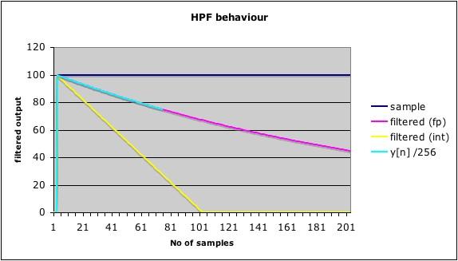

Pretty good name.
The formula i nEmonTx is:
xxxSample.Filtered = 0.996 * ( xxxSample.PreviousFiltered + (xxxSample.New - xxxSample.Previous) );
In the AVR 465 is:
y[n] = 0.996 × y[n −1]+ 0.996 × x[n]- 0.996 × x[n -1]
I'm trying to convert it to integer math but i didn't understand it deep enouth to do so.
Can anyone explain it to me in simple terms? Any idea how to make it use integer math, like AVR465?
The code on Avr465 is:
// precision! The transfer function is as follows:
//
// y[n] = 0.996*y[n-1] + 0.996*x[n] - 0.996*x[n-1]
Sample[Index].PreviousFiltered=Sample[Index].Filtered; // y[n] <- y[n-1]
TempL=255*(long)Sample[Index].Filtered;
TempL=TempL>>8;
TempI=Sample[Index].Fresh-Sample[Index].Previous;
TempL=TempL+255*(long)TempI;
Thanks.
Re: Digital High Pass Filter with Infinite Input Response
You cannot do integer maths on decimal fractions (e.g. 0.996). As soon as you include a decimal, the compiler will convert where necessary to do the multiplication, then when it has completed evaluating the right-hand side, it will truncate (or maybe round) the result and assign the value to the left-hand side variable.
If you need a better answer, I think I/you need to read very carefully the language and compiler specifications. Generally, the compiler will promote the 'narrow' variable to a 'wider' variable, i.e char -> int, int -> long, float -> double, int -> float, long -> double.
Depending on the accuracy of the original values, you may or may not loose accuracy by truncating to integer. In general terms, integer arithmetic is significantly faster than floating point.
[n] refers to this time, [n-1] refers to the previous time, x is the sample, y is the filtered result. Without looking up the app.note, I think they are extracting the 10-bit value from two 8-bit registers (which is where the ADC puts the answer). You are using high level code (AnalogRead( )) to do that - and possibly paying the price in execution time. My guess is the app.note way is quicker.
If you want an explanation of the filter algorithm, Wikipedia has a good and complete one.
Re: Digital High Pass Filter with Infinite Input Response
Not sure if this will add anything but we can show that
Re: Digital High Pass Filter with Infinite Input Response
Can anyone explain it to me in simple terms?
Paulo,
I did not have enough time on the weekend to finish my translation to integer math. But you just have to take the code from ABVR465! It works perfectly. I have it running for the voltage measurement and the runtime for the voltage calculations is down from ~60us to ~<20us. The current measurement suffers a bit from the poor resolution and some 'residual' effects of the filtering algorithm (this was already explained somewhere here in the forum). Another problem of 'your' original code is, that there are too many samples taken. This sounds strange but leads to 'saturation' of the squared sum long variable. It would be nicer to take less samples into one calculation and average over more of these results. At the moment I solved this by using a float for the sum (not very nice!).
The AVR465 code is not easy to understand, because it does not correspond directly to the formula written above! The reason is that the filtered and previousFiletered values are stored in a different format.
What Trystan said about the conversion from float to integer is absolutely correct. What do you think where the factor 0.996 originally came from? It came from someone rewriting the original AVR465 code to float! (255/256 = 0.99609375)
One small trick to shorten calculation time:
TempL = 255*(long)sample; // 64 cycles with IAR compiler
can be rewritten as:
TempL = ((long)sample<<8)-sample; // 26 cycles
because 255 = (256-1). This code is again much faster, because a shift by integer multiples of 8 just means throwing away one byte in the controller.
Maybe I can email the code this evening. My PC has problems since friday evening and runs for maximum 2-3 minutes before freezing. I think I will have to set it up completely (possibly changing from XP to Win7 now).
Regards, Jörg.
Re: Digital High Pass Filter with Infinite Input Response
Thank you everybody.
I think i got it
Re: Digital High Pass Filter with Infinite Input Response
I was under the impression that it related to the time constant of the equivalent analogue filter: RC = t . (a / (1-a)) where t = iteration period and a = 0.996.
I think they might have taken advantage of (255/256) as a happy coincidence.
Re: Digital High Pass Filter with Infinite Input Response
I think they might have taken advantage of (255/256) as a happy coincidence.
What a coincidence! The filter would work very much the same with a=0.997 or a=0.995 or whatever (0.99609375 would have been a nice value as a 4 byte float has appr. 6-7 digits accuracy!) .
No, sorry, I am pretty sure it was the other way round .
.
Re: Digital High Pass Filter with Infinite Input Response
I didn't phrase it very well. I think they wanted a value close to unity to get the appropriately long time constant, and (256-1)/256 gave a result 'close enough' that was easy to implement in integer arithmetic.
Re: Digital High Pass Filter with Infinite Input Response
Yes, sure, that is the real reason for using the factor (255/256) in integer calculation.
For float calculation you could have equally well choosen one out of some millions of other possible factors.
Re: Digital High Pass Filter with Infinite Input Response
I don't think the Atmel code is doing what it claims to do. The comment is OK, albeit unhelpfully structured, but not the code which follows. In the emonLib routine, calcVI(), the HPF is written as:
filteredV = 0.996*(lastFilteredV+sampleV-lastSampleV);
This appears to match the "algorithmic implementation" at http://en.wikipedia.org/wiki/High-pass_filter . Some extra brackets, to force integer maths, would be helpful as Jorg has already mentioned:
filteredV = 0.996*(lastFilteredV+ ( sampleV-lastSampleV ) );
The Atmel code appears to be trying to do a multiplication of 255/256 using bit-shifting. As Trystan has pointed out, this involves a left-shift by 8 places, subtraction of the original, and then a right shift of 8 places. But unless I'm very much mistaken, that's not what the code (as posted at the top of this thread) is actually doing :(
For extracting the AC content from a voltage sensor, where a large amplitude is available, integer maths may be OK because the rounding-down effect will not greatly affect the outcome. But for the current sensor, where the peak value may be just a few ADC levels, integer rounding would seem very bad news. An increase of 5 ADC levels from one sample to the next would be rounded down to 4 rather than 0.996*5 = 4.98.
Re: Digital High Pass Filter with Infinite Input Response
Robin,
the Atmel code is doing absolutely what they say (write) it does. Not quite easy to see, as some variables are not stored in the same format. Ok, the operation *255/256 results in a factor of ~0.9961, but that is a good enough approximation of 0.996. And in fact, every other factor near to 1 will work very much the same. The factor was chosen because it is relatively easy to calculate (0.995 would be much slower to calculate!).
And then I am pretty sure that the (float) factor of 0.996 came in later, when someone 'translated' the original integer code from the Atmel application note to floating point.
BR, Jörg.
Re: Digital High Pass Filter with Infinite Input Response
As posted at the top of this thread, the Atmel HPF code is:
// y[n] = 0.996*y[n-1] + 0.996*x[n] - 0.996*x[n-1]
Sample[Index].PreviousFiltered=Sample[Index].Filtered; // y[n] <- y[n-1]
TempL=255*(long)Sample[Index].Filtered;
TempL=TempL>>8;
TempI=Sample[Index].Fresh-Sample[Index].Previous;
TempL=TempL+255*(long)TempI;
The expression in the comment can be rearranged to give the familiar form that is used in calcVI():
// y[n] = 0.996*(y[n-1] + x[n] - x[n-1])
filteredV = 0.996*(lastFilteredV+sampleV-lastSampleV);
The attached spreadsheet shows how the filter reacts when presented with a step change of 100 levels. With floating point maths, the output decays at approx 0.4% per cycle (purple line), as expected. Simple integer maths, as shown by the yellow line, would clearly not be suitable.
Applying the same values to the Almel code:
In line -1, Fresh, Previous and PreviousFiltered are all 0:
TempL = 255*(long)0 = 0;
Templ = TempL>>8 = 0;
TempI = Fresh - Previous = 0;
TempL = TempL + 255*0 = 0;
In line 0, Fresh is 100, and Previous and PreviousFiltered are both 0:
TempL = 255*(long)0 = 0;
Templ = TempL>>8 = 0;
TempI = Fresh - Previous = 100;
TempL = TempL + 255*100 = 25500;
In line 1, Fresh and Previous are both 100, and PreviousFiltered is 25500:
TempL = 255*(long)25500 = 6502500;
Templ = TempL>>8 = 25400;
TempI = Fresh - Previous = 0;
TempL = 25400 + 255*0 = 25400;
In line 2, Fresh and Previous are both 100, and PreviousFiltered is 25400:
TempL = 255*(long)25400 = 6477000;
Templ = TempL>>8 = 25300;
TempI = Fresh - Previous = 0;
TempL = 25300 + 255*0 = 25300;
So the output does appear to be behaving as expected, albeit in a form that is 256 times greater than is suggested by the comment. To avoid integer rounding, it seems that the filtered value is always stored in a x256 form. At each loop, it is then multiplied again by 255 and divided by 256 (>>8). The necessary headroom for this operation is provided by the use of 'long' (4-byte) values.
(From his comment, "Not quite easy to see, as some variables are not stored in the same format", Jorg no doubt could see this all along!!)
I think the Atmel code would be more clear if written like this:
Sample[Index].Previous=Sample[Index].Fresh; // store last i/p
Sample[Index].PreviousFiltered=Sample[Index].Filtered; // store last o/p
Sample[index].Fresh=ADC; // get the new input value
TempI=Sample[Index].Fresh-Sample[Index].Previous; // the input change
TempL= (long)TempI<<8; // rescale the input change (x256)
TempL=TempL + Sample[Index].PreviousFiltered; // add the previous o/p
TempL2=TempL<<8 - TempL; // multiply by 255
Sample[Index].Filtered=TempL2>>8; // divide by 256
My way is actually more efficient, because I'm doing six operations:
an 'int' subtraction (to get the change in input)
a 'long' shift (to rescale the change in input, x256)
a 'long' addition (to include the previous output value)
a 'long' shift (to multiply the working value by 256)
a 'long' subtraction (to reduce the multiplication to 255)
a 'long' shift (to divide by 256)
Whereas, to achieve the same effect, they're doing an extra one:
a 'long' shift (to multiply the previous output value by 256)
a 'long' subtraction (to reduce the multiplication to 255)
a 'long' shift (to divide by 256)
an 'int' subtraction (to get the change in input)
a 'long' shift (to multiply the change in input by 256)
a 'long' subtraction (to reduce the multiplication to 255) <- unnecessary!
a 'long' addition (to combine both parts)
In my case, I combine the two components before doing the x255 operation. They are doing the same operation on each of the two components before they are combined, which is a less efficient use of the processor, IMHO.
Re: Digital High Pass Filter with Infinite Input Response
Quote: (From his comment, "Not quite easy to see, as some variables are not stored in the same format", Jorg no doubt could see this all along!!)
Sorry Robin, when writing this I could just remember that it was something like this, but couldn't name it directly. Otherwise I had been more precise. But what you found is absolutely correct.
It is not so easy to say (without simulation) if your code is really more efficient. The ATmega328 has a multiplication unit which could help to make the processing times lie very close together.
PS: I just made a short test and your code is clearly more efficient! One multiplication by 255 costs around 50 cycles and your ((TempL<<8)-TempL) ~30 cycles. This might slightly depend on other circumstances and compiler optimization settings, but is a clear improvement!
Re: Digital High Pass Filter with Infinite Input Response
Thanks, Jorg,
I'm busy doing a re-write of the standard measurement routines to use integer maths and bit-shifting. It certainly seems to be a lot quicker than all those floating point calculations.
I feel sure that the ((TempL<<8)-TempL) idea, as opposed to TempL*255, is well-established prior knowledge. My contribution is to combine the two components before doing the x255/256 processing. It seems such an obvious way to go that I can't imagine why Atmel would do it any other way. Maybe they hadn't looked at:
filteredV = 0.996*(lastFilteredV+sampleV-lastSampleV);
as many times as I have!
Re: Digital High Pass Filter with Infinite Input Response
Robin,
rereading this thread I actually saw that I originally made the proposal for the ((TempL<<8)-TempL) idea:
One small trick to shorten calculation time:
TempL = 255*(long)sample; // 64 cycles with IAR compiler
can be rewritten as:
TempL = ((long)sample<<8)-sample; // 26 cycles
but just forgot about it (and that I even had done a processing time check ....). But your idea is also very good and saves about as much time or even more.
Re: Digital High Pass Filter with Infinite Input Response
Here's a spreadsheet to show how the Atmel HPF works with its dual x255/256 processing. I've stopped the output line early so that an easy comparison can be made against the standard floating point x0.996 version. Atmel's logic gives virtually identical performance, but is much faster to execute using integer maths.
The picture below is the same as in the spreadsheet:
blue line: a step change fom 0 to 100 at T=0
purple: filtered using floating point maths and 0.996
yellow: as above, but with integer truncation
cyan: ATMEL's x255/256 'long' implementation whereby integer truncation is reduced by 256

Re: Digital High Pass Filter with Infinite Input Response
There is actually no reason why the Atmel math (or better integer math) should result in inferior performance. Integer math is the 'best' and most exact math a microcontroller can do. Every +,-,* operation gives either the exact result or an overflow. Dividing is a different story where evil things can happen if it is not done with some care.
This is completely different for float calculations. Here every operation can give an 'unexact' result (or overflow, same as with integer). What is equally surprising is, that ((x+y)+z) can (and in many cases will) give a different result than (x+(y+z)).
You simply have to be very careful when doing math with a microcontroller. It seems simpler to get reasonable results with float though, but certainly at the price of inferior runtime performance.
Re: Digital High Pass Filter with Infinite Input Response
Using part of an integer as a fraction is called "fixed point math". There's some interesting (if you're a programmer nerd like me :) info here, for example:
http://en.wikipedia.org/wiki/Q_(number_format)
(... but read the Talk page, too. Apparently there are some problems with the article.)
Re: Digital High Pass Filter with Infinite Input Response
Integer math is the 'best' and most exact math a microcontroller can do.
Yes, I would agree with that, Jörg. Floating point maths is just too easy!!
Many years ago, I joined a team where all the talk was about dynamic ranges and the need for certain lengths of words at different points in the processing. Much of this went over my head, but a little is still retrievable.
The Arduino needs 10 bits to store the 1024 possible output states from its ADC. If each sample stream is filtered as per Atmel's algorithm, the filtered values for V and I will each require 18-bits. Multiplying these together could result in overflow because a 'long' is only 32-bits. I therefore think it sensible to left-shift a copy of each filtered value by 2 bits before they are multiplied together. We will then have a 32-bit value for instP. To allow many such contributions to be added together as sumP, each instP value will again need to be left-shifted, maybe by 6 or 8 bits. This approach should not be thought of as loss of information; rather, it is maintaining maximum resolution at all times.
After each whole cycle, or half cycle, this accumulated value can be added to the energy bucket which emulates the supply meter. I see no reason why this can't all be done using integer maths; there's no need for the energy bucket to run from 0 to 3600J using floating point values. A 'long' variable, used between, say, 0 and 256x256x256x42, would be just as good; it's perfectly linear, and much faster to operate. Rather than using powerCal to vary the supply rate to a fixed-size bucket, the buckets's capacity can simply be set to match the hardware. Each pulse of the supply meter would then equate to 256x256x256x42, or whatever, and the bucket's upper limit would be set to this value. Each Joule will still have the same effect, whether recorded as export (surplus PV) or import (dump load).
Maybe the bucket should be an (unsigned) int rather than a long; that would still have a resolution of better than 0.1 Joules.
Re: Digital High Pass Filter with Infinite Input Response
Here's an even slicker version of the standard HPF using integer maths. Because the filtered value is stored at x256 scale, the x255/256 operation can be done very easily by just subtracting a >>8 version of the original. That's got to be better than the way that Atmel (and I) were doing it.
Sample[Index].Previous=Sample[Index].Fresh; // store last i/p
Sample[Index].PreviousFiltered=Sample[Index].Filtered; // store last o/p
Sample[index].Fresh=ADC; // get the new input value
TempI=Sample[Index].Fresh-Sample[Index].Previous; // find the input change
TempL= (long)TempI<<8; // rescale the input change (x256)
TempL=TempL + Sample[Index].PreviousFiltered; // add the previous o/p
Sample[Index].Filtered=TempL-(TempL>>8); // subtract 1/256, same as x255/256
Thanks Jörg, pity I didn't spot this one :-(